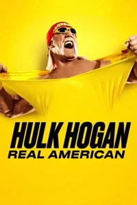
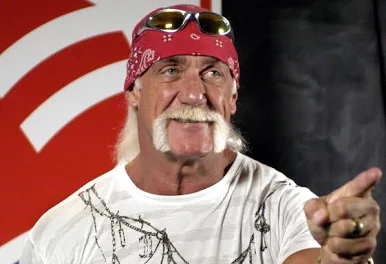
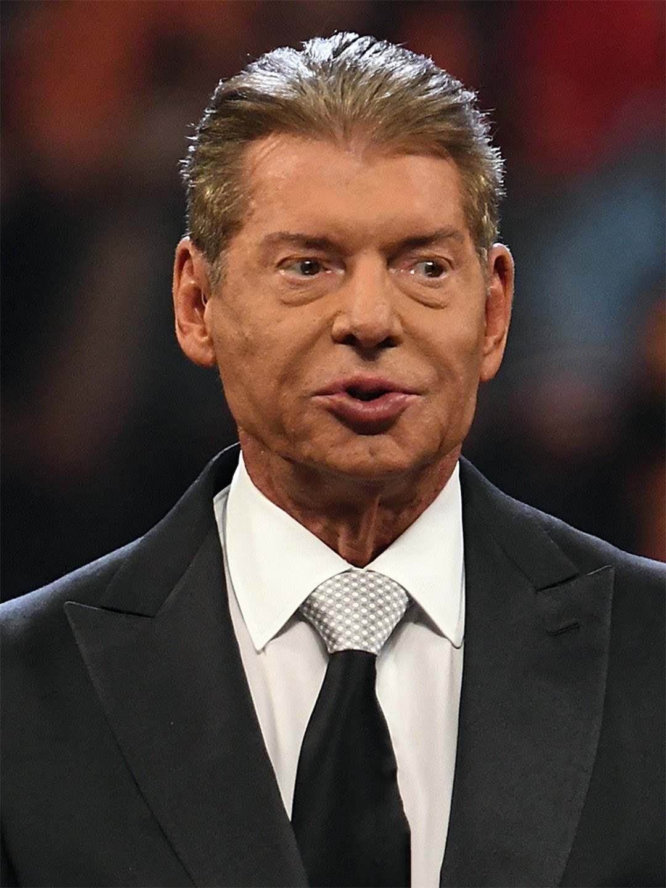
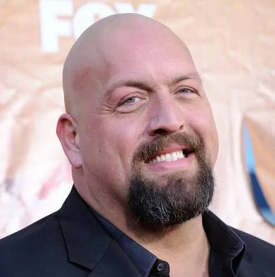
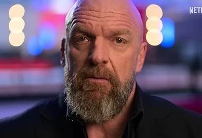
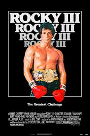
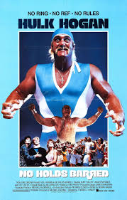
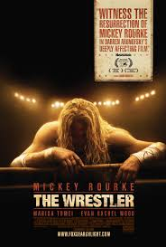
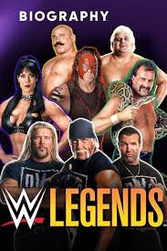
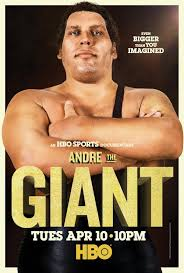

HULK HOGAN
Terry Bollea se convirtió en Hulk Hogan. Este documental sin filtros revela
al hombre detrás de la leyenda a través de su entrevista final.
- Género: Documental, Biografía y Deporte
- Año: 2026
- Duración: 1 temporada
- Director: Bryan Storkel
- Productores/as: Karen Bowlin
- Calificación general: 7.6/10
- Clasificación por edad: +18
- Plataformas: Netflix
Tráiler
REPARTO

HULK HOGAN
LINDA HOGAN

VINCE MACMAHON

PAUL WIGHT

PAUL LEVESQUE
RESEÑAS DESTACADAS
Calificación: 9.0 / 10
WrestlingFan84 dice:
Un tributo épico al ícono del ring.
"La película logra capturar la esencia de Hulk Hogan como símbolo de la lucha libre
y del espíritu americano. Las recreaciones de sus combates más memorables son
emocionantes y la banda sonora potencia cada momento. Un homenaje digno para los fans."
Calificación: 7.0 / 10
RetroCine dice:
Entretenida, pero algo exagerada.
"El film es divertido y nostálgico, pero en algunos momentos se siente demasiado
dramatizado. Hogan es un ícono, pero la narrativa cae en clichés típicos de biopics.
Aun así, es un viaje entretenido para quienes crecieron viéndolo en el ring."
Calificación: 8.0 / 10
RingMaster dice:
Hulk Hogan como héroe cultural.
"Más allá de la lucha libre, la película muestra cómo Hogan se convirtió en un
fenómeno cultural. La mezcla de acción y drama funciona bien, aunque algunos
pasajes se extienden demasiado. El cierre es emotivo y deja una sensación positiva."
Calificación: 7.5 / 10
CineGeek dice:
Gran energía, pero ritmo irregular.
"Las escenas de lucha están muy bien logradas y transmiten la energía del espectáculo.
Sin embargo, el ritmo decae en la mitad y algunas subtramas no aportan demasiado.
El final compensa con un clímax emocionante."
Calificación: 6.5 / 10
OldSchoolFan dice:
Un homenaje que pudo ser más sólido.
"El carisma de Hogan sostiene la película, pero la trama principal se siente algo floja
y repetitiva. Los efectos visuales y la música acompañan bien, pero esperaba un guion
más profundo. Aun así, es disfrutable para los nostálgicos."
RELACIONADOS

ROCKY III
Calificación: 6.8/10
DURACION: 1h 39min

NO HOLDS BARRED
Calificación: 4.4/10
DURACION: 1h 33min

THE WRESTLER
Calificación: 7.9/10
DURACION: 1h 49min

WWE LEGENDS (SERIE)
Calificación: 7.5/10
DURACION: 2 temporadas
